Emily joined the We Belong Program to grow her skills and build confidence within the community. Emily loved her experience, joining iBOX Workshop, where she discovered the benefits of fitness and the joy of exercising with others.
The Flagstaff team continued to support Emily’s journey, helping her enrol in a Certificate II in Applied Digital Technologies TAFE course. Whilst studying, Emily was keen to expand her communication skills and explore new ways to connect with others, so she participated in the Art of Conversation Workshop. Her enthusiasm for community involvement only grew. Emily later joined the Street Beatz Hip Hop Dancing Workshop, where she improved her coordination and learnt some new dance moves!
By the end of the year, Emily’s growth was clear to everyone around her. With her new skills and self-assurance, she was chosen as an ambassador to speak at the Vincentia Inclusion Awareness Event. There, she shared her insights as a person with lived experience, inspiring local organisations and showing just how much the We Belong program had helped her become an active, engaged member of her community.
Emily was keen to meet new people and discover new things. Thanks to We Belong, Emily exceeded her goal: she gained a newfound confidence, whilst improving her motor skills and skill set.
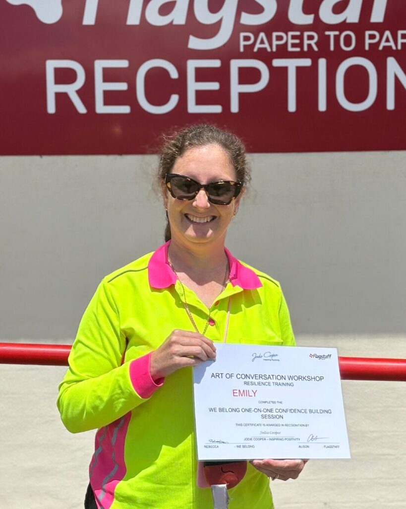
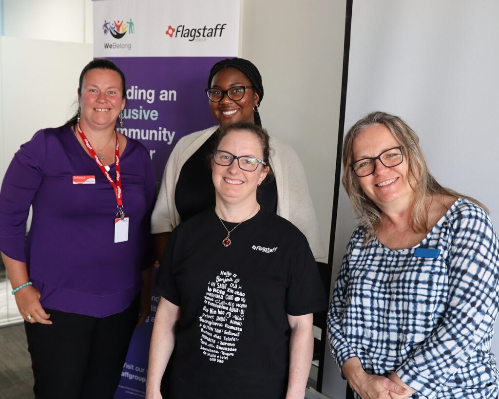
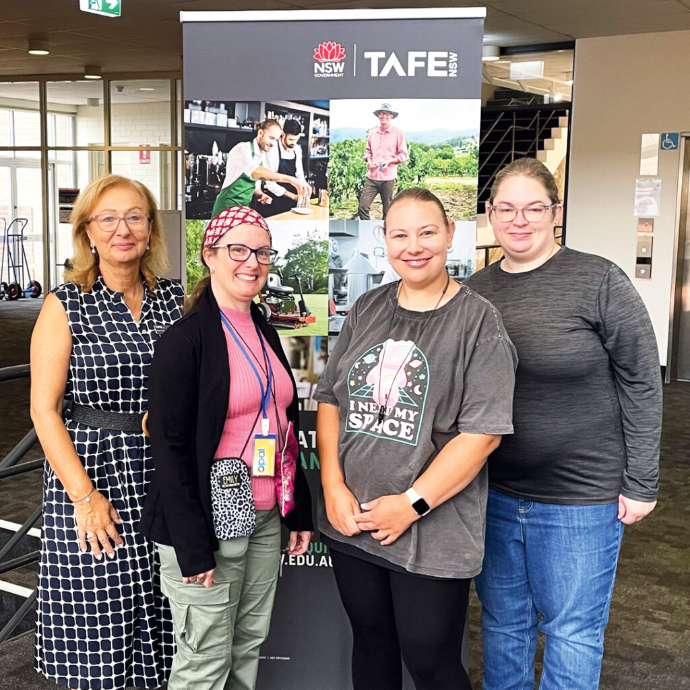
Rachel loves acting! Before We Belong launched, Rachel was an active member of her community drama group, but she felt a need to grow her confidence in public speaking.
Under We Belong, Rachel joined the Art of Conversation Workshop to develop her public speaking skills. After four weeks, Rachel felt even more confident, especially in acting on stage in front of a large audience or taking on bigger roles in her drama group.
Congratulations Rachel on achieving your goal with We Belong!
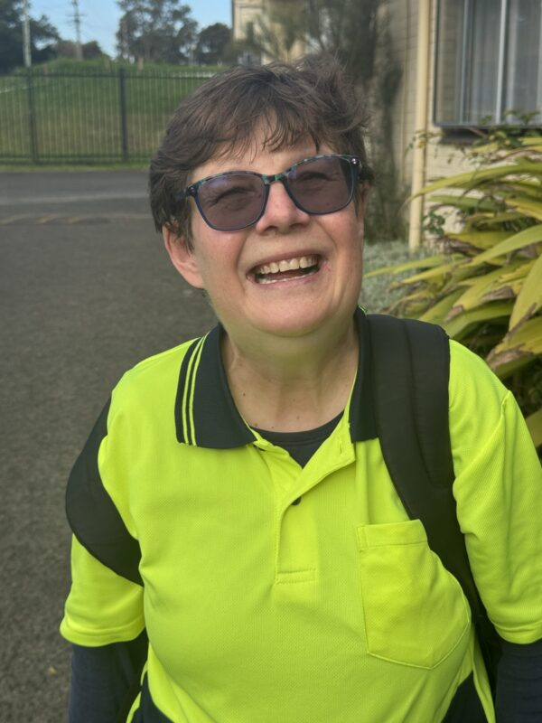
Scott joined We Belong to go outside of his comfort zone and found himself participating in the Street Beatz Hip Hop Workshop. Each week, Scott was excited to dance with his friends and others out in the community. His confidence increased, so much so he even broke out into his own moves!
Congratulations Scott! We are proud of you for gaining a newfound confidence.
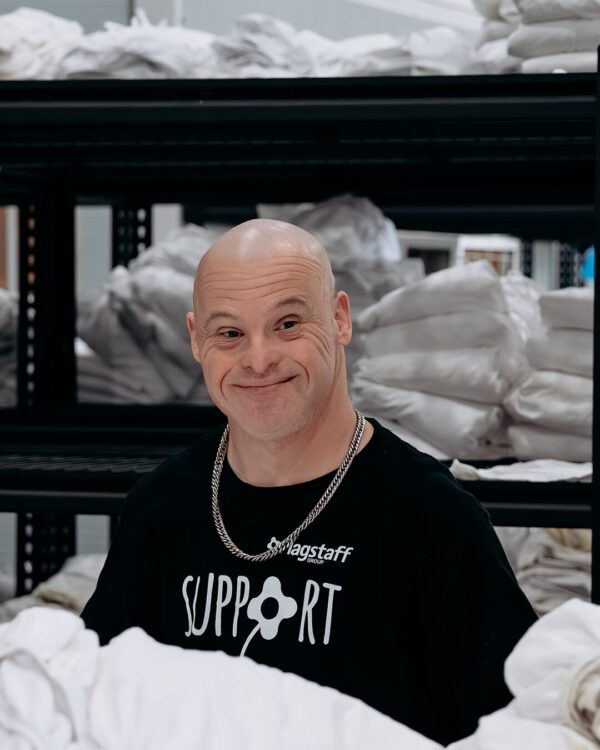
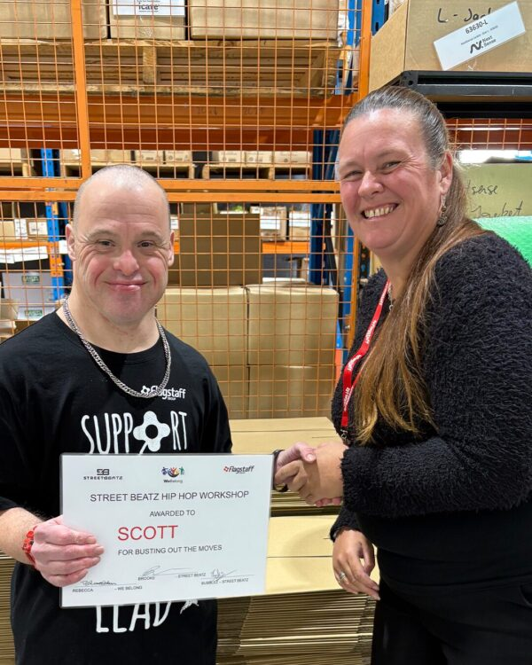
Shawn continued growing by joining Flagstaff’s Resilience Crusaders program and the Co-Design Reference Group, ensuring people with disability have a voice in shaping programs and supports. He then took part in the We Belong Speechcraft Workshop, where he developed communication skills and found a strong sense of belonging in sharing stories.
As Shawn progressed, he decided to improve his reading and writing skills – We Belong found a local solution, Wollongong Library’s Read and Write for Life Program which offers one-on-one tailored tutoring. The weekly sessions have transformed Shawn’s confidence and ability to engage with others.
Shawn’s journey reflects the We Belong program’s commitment to breaking down barriers, fostering inclusion and empowering people with disability to share their voices. Through storytelling, workshops, co-designed resources and tailored support, We Belong creates safe pathways for people to connect, grow and participate fully in community life, building a more inclusive future, one story at a time.
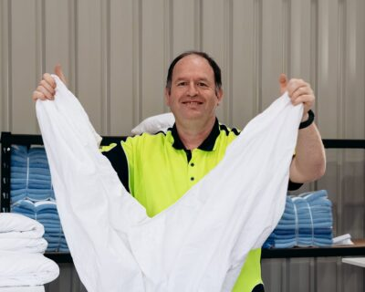
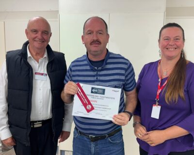
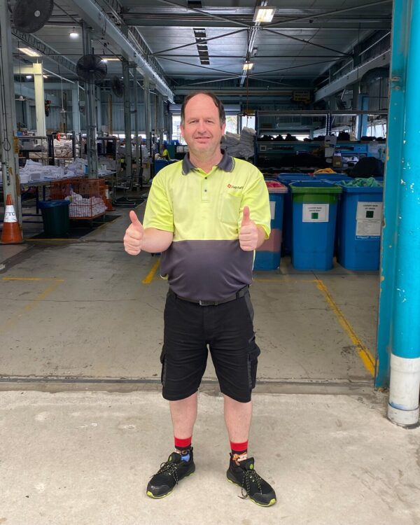
Tel enjoys interacting with others and loves to box and dance! When We Belong launched the iBOX Workshop and Street Beatz Hip Hop Dancing Workshop, Tel was the first person to join.
Tel enjoyed making new friends and learning new skills in both workshops. Tel even signed up for extra dance lessons with the Dance Studio every week, connecting him to a new group in the community, doing something he is passionate about.
Well done, Tel! Through We Belong, Tel has found new friendships, learnt new skills and connected with new parts of the community.
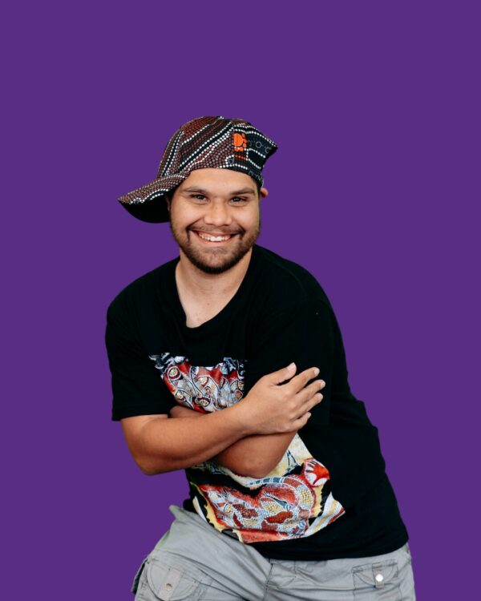
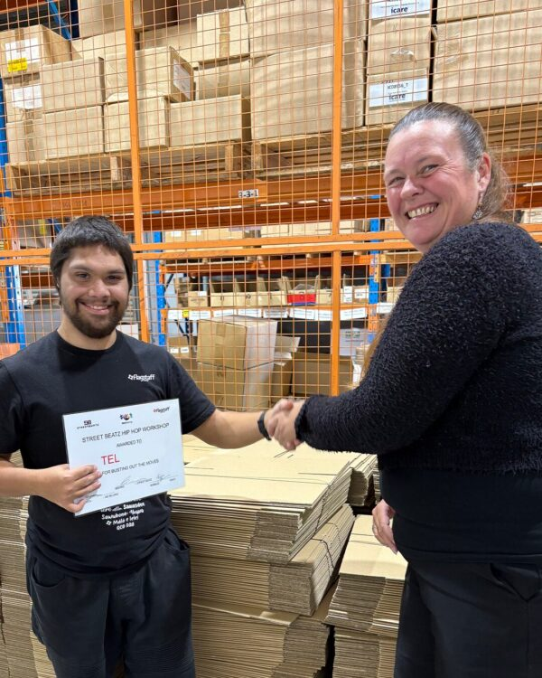